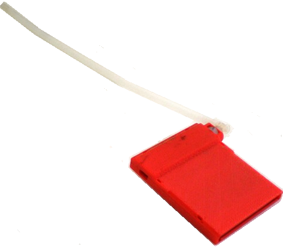
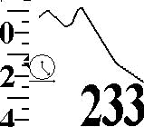
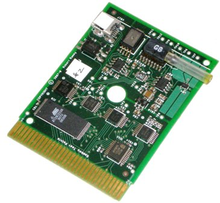
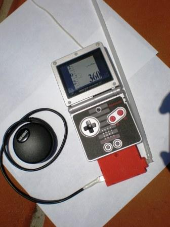

|
|
|
FlyBoy Vario

Lately, I've been working on a variometer for hanggliders,
paragliders and balloonists. This vario has the following features: It's packaged
as an enhanced game cartridge that will plug into any Gameboy game player and convert it into a quality flight instrument.
This brings the following advantages:
-
A Gameboy includes all necessary user interface hardware/software including color
bit mapped display, sound, impact resistence.
-
There is variety of accessories for the Gameboy including wireless headphones, etc.
-
There is a variety of Gameboy models including ones with built-in
rechargable batteries and backlit LCD for you pilots who fly at night.
-
On long, boring flights, you can remove the cartridge and plug in donkey kong.
Reasonable cost. I will be selling only the cartridge. The purchaser will purchase
his own Gameboy at a price from $5.00 to $80.

My hope is to provide a reasonable cost instrument that is much easier to use and
much more helpful to pilots who desire to improve their thermaling skills and judgement.
To this end much emphasis has been placed on exploiting the bitmapped display provide
the relevant information in a clear and intuitive manner.
Current Prototype
Here the "guts" of the FlyBoy circuit board. They've been placed on the board so
as to fit into a standard Gameboy game cartridge.

Here's a picture of the pre-production prototype inserted into a GameBoy Advance/XP.

For those of you interested in such things, here is the CAD model used to
fabricate the GameBoy compatible cartridge which holds the circuitry. It includes all
drafts and details required for manufacture via plastic injection molding.
Operating Instructions
Here is the draft Owner's Manual as a
In order to print the Word Document as a handy pamphlet,
this is what I have to do:
- Download
Manual.doc
to any directory.
-
Open up Manual.doc with Microsoft Word.
- Select
Page Setup from the File Menu. On the Margins Tab:
-
Orientation = Landscape
-
Pages: Multiple pages = Book fold
-
Pages: Sheets per booklet = All
- Select
Print from the File menu:
-
check Manual duplex
-
Press OK to start printing the front sides of the sheets.
-
A dialog box will appear telling you to remove the printed sheets from the output
bin and place them into the output bin. Ignore this for now.
-
When the front sides of the sheets are printed, remove them from the output bin
and, leaving them face up, reverse the sequence by dealing them like a deck of cards.
Place them in the printer input bin.
-
Press the OK button on the dialog box.
-
When the backsides of the sheets are printed, remove them from the output
bin, re-shuffle again and fold them in the middle to make a pamphlet.
There is probably a simpler and better way to set this up but I haven't been able
to find it. Any ideas here will be appreciated.
You can also print the pdf files. First print the
front, shuffle
as above and then print the
back
and shuffle again.
Be at Test Pilot!!
I'm currently flying with my prototype and pleased with the operation and performance.
I'm interested in getting opinions from my fellow local pilots - expecially paraglider
pilots. If you're interested in helping me out by taking a test flight with my prototype
and giving me a written critique, please email
me.
|